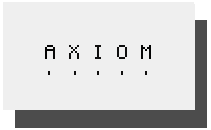
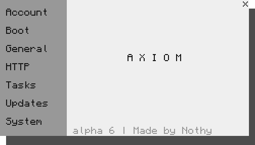
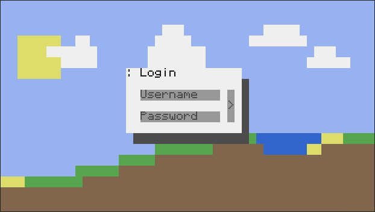

Home | About | Projects | Twitter
Axiom, the 'tiny' operating system for ComputerCraft that is still in development, it is by far the largest OS I've ever made
To that I respond with this very organized list of features! *
⋅ Powered by Edge Graphics API
⋅ Custom API support
⋅ Custom background support
⋅ Lots, and lots of settings
 
With all of these features, comes a simple GUI that is easy to understand and even easier to use
* not very organized, in all honesty.